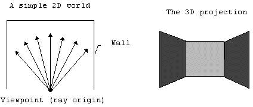
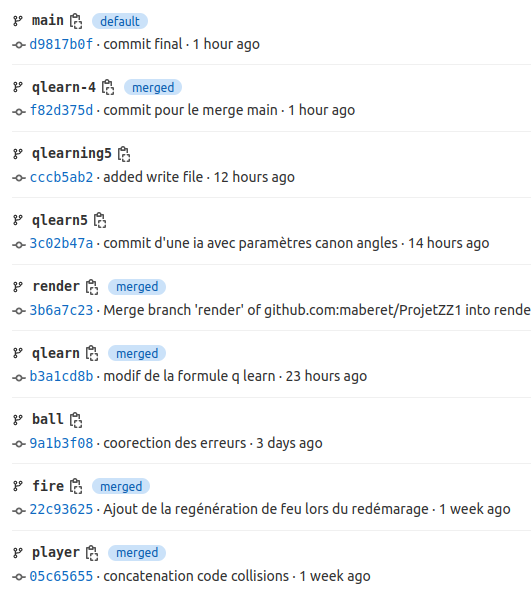

Projet apprentissage par renforcement

Jeu avec apprentissage par renforcement : terminé ✔️

🎾 Raison d'être du jeu
Réinvestir les acquis de la première phase afin de créer un prototype de
notre propre « jeu vidéo » respectant la thématique du projet : apprentissage
par renforcement ou Q-learning, méthode « essai-erreur ».
🎾 Principe du jeu
Un match de tennis sans rebonds.
Un joueur humain affronte une intelligence artificielle entrainée à renvoyer la balle.
🎾 Visuel du jeu
Le raycasting est une technique de rendu permettant de créer une perspective 3D dans une carte 2D.
Nous avons décidé de faire tout le rendu visuel de notre jeu en 3D en utilisant cette technique. Cela rajoute
un challenge mathématique, le raycasting fonctionnant avec beaucoup de trigonométrie.

🎾 Chronologie & Organisation
Chronologie générale :
Organisation de l'équipe :
Nous avons travaillé avec Git et l'utilisation des branches. Nous avons rapidement
séparé le travail comme suit. Pour plus de détails voir notre Trello
ici.
➤ Taha Belkhiri : toute la partie visuelle (rendu 3D, carte, assets) et plug de l'IA.
➤ Marc Beret : mathématique des trajectoires; création et entrainements de l'IA grâce à l'apprentissage par renforcement.
➤ Antoine Meyer : logique des acteurs (collisions, déplacements); rendu 2D et ses courbes; page web.
🎾 Structure du code
Informations issues de Gitlab
Structure du code

Travail par branches
🎾 Carte du jeu : 2D et 3D
Notre espace de jeu est un espace en deux dimensions (2D) lu à partir d'un fichier texte.
Les valeurs 1 correspondent à la foule et représentent les limites du terrain.
Les valeurs 2, 3 et 4 correspondent aux bords et milieu du filet. Le joueur humain
joue sur la partie gauche et l'IA joue à droite. L'axe horizontal est l'axe des x croissants.
L'axe vertical est l'axe des y croissants.
À partir de cette lecture, nous avons pu créer plusieurs vues de la carte de jeu.
➤ Deux vues 2D avec une vue de haut et une vue de côté.

➤ Une vue 3D avec la technique du raycasting.
🎾 Apprentissage par renforcement grâce au Q-learning
Définition du problème :
Faire apprendre à notre intelligence artificielle à se mouvoir dans son espace de jeu, voir la balle arriver et bien se
placer pour être capable de renvoyer la balle.
Principe de fonctionnement :
Nous avons découpés notre zone de jeu en 4 zones.
L’IA doit apprendre à se positionner dans la bonne zone
pour attraper la balle. Le déplacement de l’IA est libre
dans toute sa partie du terrain.
Liste des actions possibles :
Liste des perceptions et états possible de l'agent :
L’agent a plusieurs perceptions pour prendre ses décisions. Il connaît la zone dans laquelle il
se trouve actuellement, zone_agent (4 zones possible); la zone de départ de la balle qu’il va
devoir attraper, zone_balle_départ (4 zones possible); l’angle à plat de départ de la
balle, angle_plat_balle_départ en ° (5 angles à plat); l’angle en hauteur de départ de la
balle, angle_hauteur_balle_départ en ° (3 angles en hauteur). Nous avons donc 4 * 4 * 5 * 3 = 240 états.
🎾 Touches et informations en vrac sur le jeu
Contrôles :
touches ZQSD => déplace le joueur
touche H => affiche/masque le hub
touche B => repositionne la balle devant le joueur
souris => oriente le regard du joueur, destination de la future frappe
clic gauche => tire dans la balle, jauge la puissance du tire avec durée d'appuie
Mini-map :
La mini map est une vue de dessus 2D du jeu.
Le carré bleu est le joueur. Le carré rouge correspond à l'IA.
Le carré vert est la balle. Le rectangle bleu est la zone limite du terrain.
Le rectangle blanc est le filet. Les rays jaunes sont les rays pour
faire la vue 3D. La barre rouge correspond au x du tir du joueur.
🎾 Historique des graphismes
Graphismes n°1 : test du raycasting
Graphismes n°2 : test implémentation sprites
Graphismes n°3 : améliorations sprites
Graphismes finaux
🎾 Idées non réalisées et pistes d'améliorations
➤ menu
➤ score
🎾🎾🎾🎾🎾🎾🎾🎾🎾🎾🎾🎾🎾🎾🎾
🾠Démonstration en direct ğŸ¾
🎾🎾🎾🎾🎾🎾🎾🎾🎾🎾🎾🎾🎾🎾🎾
🾠Jeu, Set & Match.